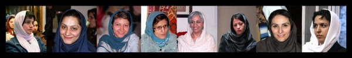

|
|
|
Browsing
Contact Us |
Campaigners |
Face to Face |
Tribune |
Interview |
News |
On the Web |
One Million |
Report
Farsi | Français | German | Italian | Spanish | العربية Also in this section
|

Nafiseh Azad, Farideh Ghaeb, Aida Saadat and Sarah Loghmani, summoned and charged last month Jilla Baniyaghoob Summoned to Investigative Court and ChargedSunday 7 September 2008 Change for Equality: Jila Baniyagoob, journalist, member of the One Million Signatures Campaign, and editor of the site of Women in Iran, appeared in the investigative branch (Branch 1) of the Revolutionary Court on Saturday September 6, 2008 following a summons she received the previous week. During this session she was charged with disruption of public order, and refusal to obey the orders of the police. These charges and the summons were following her arrest on June 12, 2006 on the occasion of the Day of Solidarity of Iranian Women in opposition to legal discrimination. On that day, 9 women’s rights activists were arrested following the cancellation of a seminar in commemoration of this day, by security officials. Last month, Nafishe Azad, Farideh Ghaeb, Aida Saadat and Sarah Loghmani, who were among the nine arrested on June 13, 2008, were also summoned to investigative court in relation to this same case, and charged with similar crimes.
Jila Baniyaghoob denied the charges against her and provided the following written statement in her own defense: "unfortunately police and security officials provide false reports. The police have the responsibility of ensuring order and security in society, but instead it works to disrupt the security of society through arbitrary arrests. Instead of putting me and other women’s rights activists on trias, isn’t it more appropriate to investigate the actions of the police who violently beat up Mr. Keyvan Samimi, writer and editor, in front of the Silk Road Gallery [where our seminar was to take place] and arbitrarily and illegally arrested 8 other women’s rights activists?" The investigative court hearing held on Saturday was presided over by Judge Sobhani. Mina Jafari, the lawyer representing Baniyagoob was prevented from attending the hearing. In response to the repeated objections of Ms. Jafari with respect to her client’s right to have an attorney present during the hearing, Mr. Sobhani offered the following response: "the case against your client is a security case As such you are not allowed to be present during the hearing." Mina Jafari objected to this decision by claiming that: "while the judge claimed the case and charges against my client to be of a security nature and based on this claim denied my client the right to have an attorney present during the hearing, the charges against my client are not in line with security charges as outlined in the penal codes. The refusal by the courts to allow my client the benefit and presence of an attorney during a court hearing constitutes the denial of the basic rights of my client." Jafari further explained that: "the charge of disrupting public order and refusal to adhere to the orders of police fall under the jurisdiction of lower courts, namely public courts, rather than the Revolutionary Courts." In the end of the investigative hearing, a bail order of 50 million Tomans (roughly $55,000) in the form of a third party guarantee was issued for Ms. Baniyaghoob. The other four women charged in this case so far, Nafiseh Azade, Farideh Ghaeb, Sarah Loghmani and Aida Saadat, were also issued the same bail order. Khadijeh Moghaddam and Nahid Jafari, members of the Mothers Committee of the Campaign accompanied Jila Baniyaghoob to court, but were not allowed to enter the court house. On the 12th of June 2008, a seminar was planned at the Silk Road Gallery, in honor of the Day of Solidarity of Iranian Women in opposition to legal discrimination. The Seminar was broken up by security forces and 9 persons including Ms. Jila Baniyaghoub were arrested. Others arrested include: Nahid Mirhaj, Aida Saatad, Nafiseh Azad, Nasrin Sotoodeh, Farideh Ghaeb, Sarah Loghmani, Jelve Javaheri, and Alieh MotalebZadeh.
 Those arrested were released several hours later. Mr. Keyvan Samimi, Writer and Editor of the banned Quarterly Nameh was beaten by police and detained for several hours. He has filed a case against the police and security officials in relation to their brutal treatment of him. Thus far, five women have been charged in relation to this case. Read the news about the arrests of the nine women on June 12, 2008. |